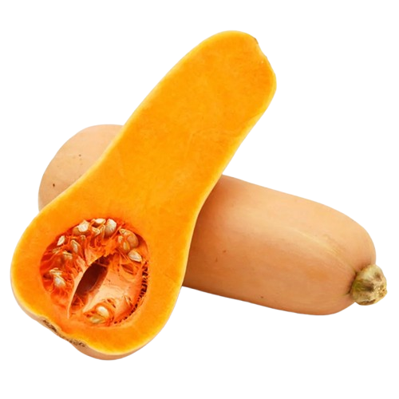

De hoja
-
Acelgas
Espinaca
 Lechuga
Lechuga
 Rucula
Repollo
Rucula
Repollo

Raiz o tuberculo
-
Papa
 Batata
Batata
 Zanahoria
Zanahoria
 Rabanito
Rabanito
 Remolacha
Remolacha
De fruto
-
Tomate
Pimiento (Morron)
 Zapallito
Berenjena
Zapallito
Berenjena
 Pepino
Pepino
Bulbos
-
Cebolla
Ajo
 Puerro
Puerro
 Verdeo
Verdeo
Legumbre
-
Arvejas
 Habas
Habas
 Chauchas
Chauchas

Otras
-
Choclo
 Apio
Apio
 Brocoli
Brocoli
 Colifolor
Colifolor
 Calabaza (Anquito)
Calabaza (Anquito)
- 